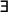
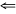
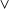
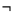
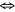
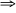

| Overview | Syntax and Semantics | Proof and Model Theory | Goedel | Applications |
Note: this page is still under construction.
Deductive Databases
A database is a Herbrand model in a vocabulary without function constants, where only part of the vocabulary is known at any point in time. The vocabulary is treated as unknown so that if at some point in time the model satisfies some sentence, then as long as the only updates to the model are additive, that sentence is still satisfied, i.e. databases are monotonic.
For example, consider a simple database (Herbrand model).
- {p(a), p(b), q(a)}
- {p(a), p(b), q(a), q(c)}
By keeping the vocabulary and universe unknown, the original database does not satisfy x.p(x) for the simple reason that the database never satisfies x.p(x). Since such a query is always false, database query languages do not allow one to ask universal queries. Thus, answering a database query amounts to checking whether some sentence *. (x1,...,xn) is satisfied by the model, or more precisely, it amounts to finding all the x1,...,xn such that the model satisfies (x1,...,xn).
(x1,...,xn) is satisfied by the model, or more precisely, it amounts to finding all the x1,...,xn such that the model satisfies (x1,...,xn).
Deductive databases use variants of Datalog to query a database. Datalog is a subset of first-order logic, which is quantifier free.
Definition (Datalog Rule): A Datalog rule is an implication (where :- is used instead of  and , is used in place of  , as is traditional).
, as is traditional).
- h :- b1, b2, ..., bn
- h is an atom.
- each bi is a literal.
- there are no function constants.
- every variable in a negative literal must appear in a positive literal in the body.
- every variable in the head must appear in the body.
Datalog is usually viewed as extending a database with a set of view definitions, but because Herbrand semantics allows for multiple models, it is inappropriate for extending a single model. Two variations on Herbrand semantics are often used as the semantics for Datalog: minimal Herbrand semantics and stable model semantics. We leave discussion of stable model semantics to the section on Prolog.
If a set of Datalog rules has no negation, i.e. when every bi is an atom, it is Horn. It is well-known that Horn rules have a well-defined minimal model (as measured by the number of ground atoms in the Herbrand model), and the semantics for such a set of rules is defined to be that model. When the rules do include negation, the minimal model is not necessarily well-defined. For example, the sentence
- p(a) :- not q(a)
- p(a)  q(a)
While negation does present some problems for the notion of a minimal Herbrand semantics, certain forms of negation do have well-defined minimal models. Stratification is one such form.
Definition (Datalog Stratification): A set of Datalog rules are stratified when the following graph is acyclic. The set of nodes is the set of relation constants in the set of rules. An edge from n to m exists whenever the relation constant n appears as a negative literal in the body of a rule with m in the head. Stratum 0 is the set of all nodes without incoming edges. Stratum 1 is the set of all nodes adjacent to a node in stratum 0; stratum i+1 is the set of all nodes adjacent to a node in stratum i that are not in stratum i.
Clearly, if there is no negation, the graph has no edges, which means it has a single stratum and is acyclic. When a set of Datalog rules is stratified, we can always choose a single Herbrand model as its semantics.
Definition (Stratified Datalog Semantics): Let S be a set of stratified Datalog rules. Stratum 0 contains no negation; thus it has a minimal model. The minimal model for stratum i+1 is constructed by extending the minimal model for stratum i by evaluating the body of all rules in stratum i+1 in the minimal model of stratum i.
For example, consider the following stratified rules, where it is traditional to use not in place of .
- p(a) :- not q(a)
q(b) :- not t(b)
t(c)
- {t(c)}.
- {t(c), q(b)}.
- {t(c), q(b), p(a)}

Variables in negative literals can be problematic. Consider the rule set
- p(x) :- not q(x)
q(a)
The last two constraints in the definition for a Datalog rule ensure that condition: (1) every variable in a negative literal must occur in a positive literal in the body and (2) every variable in the head must occur in the body. The first constraint avoids the problem illustrated in the last example. The rule p(x) :- not q(x) is not allowed since x occurs in a negative literal but in no positive literal in the body. However, constraint (1) is not sufficient for ensuring the negative literals can always be evaluated in the known vocabulary. For example, consider the following rules:
- p(x) :- q(x), not r(x)
q(x) :-
Now that the motivation for the definition of a Datalog rule has been explained, some decidability results can be given. Because Datalog does not allow function constants, the number of Herbrand models for any finite vocabulary is finite. Regardless which semantics are used, as long as the semantics assigns some subset of all Herbrand models over a finite vocabulary and checking satisfaction is decidable, entailment is decidable.
Theorem (Datalog is Decidable): Let  be a finite set of Datalog rules. Let S be a semantics for Datalog that chooses some subset of the Herbrand models over the vocabulary induced by , where checking whether a model satisfies is decidable. Let be the query.
be a finite set of Datalog rules. Let S be a semantics for Datalog that chooses some subset of the Herbrand models over the vocabulary induced by , where checking whether a model satisfies is decidable. Let be the query.
 under the semantics S is decidable.
under the semantics S is decidable.Proof: Since
itself is finite, the vocabulary and therefore the number and size of all Herbrand models over that vocabulary is finite. Because satisfaction in S is decidable, to check entailment, enumerate each model for the vocabulary and when it satisfies check whether it satisfies . If every model that satisfies satisfies , . Otherwise  .
.
Unlike theorem proving, answering a query in a database usually means finding all the tuples for which the query is satisfied. We call this materializing the query.
Definition (Materialization): Let be a set of sentences and (x1,...,xn) be a query with free variables x1,...,xn. The materialization of the query for is the set of all <t1,...,tn> such that (t1,...,tn), where each ti is ground.
Corollary (Materializing Datalog is Decidable): Same conditions as the last theorem. has the free variables x1,...,xn. Materializing for is decidable.
Proof: Let  be some substitution x1/c1,...,xn/cn, where each ci is an object constant in the vocabulary of . By the above theorem is decidable. If , add the tuple <c1,...,cn> into the materialization. Since is finite, the number of variables is finite; since is finite, the number of object constants is finite. Thus, the number of distinct s is finite; check entailment for each one and return the resulting set of tuples.
be some substitution x1/c1,...,xn/cn, where each ci is an object constant in the vocabulary of . By the above theorem is decidable. If , add the tuple <c1,...,cn> into the materialization. Since is finite, the number of variables is finite; since is finite, the number of object constants is finite. Thus, the number of distinct s is finite; check entailment for each one and return the resulting set of tuples.
Completeness and NAF implementation
Minimal Herbrand semantics, whatever the form, ensures that at most one model satisfies a given set of Datalog rules. Assuming the rules are consistent, the consequences of those rules is an axiomatically complete theory.
Definition (Axiomatic Completeness): A theory T is axiomatically complete for language L if and only if for every closed sentence in L,
T When a theory in a complete logic, i.e. a logic with a complete proof procedure, is axiomatically complete and has a recursively enumerable axiomatization, the theory is decidable: for any query , interleave proof attempts for and . One of them is entailed, and because the logic is complete, the proof will be found. In such a theory, negation as failure (NAF) is monotonic: failing to prove ensures that is entailed.
Definition (Negation as Failure): Negation as failure is the following inference rule:
| |
| |
NAF is monotonic whenever entails either the query in question or its negation, i.e. is complete for the language that includes either the query or its negation.
Theorem (Monotonic NAF): NAF is monotonic for a particular query if and only if the theory is complete wrt the language {}.
Proof:
( is complete) (
)  (Logical equivalence of p q and p q) (Every query is either entailed or not entailed)Because the Stratified Datalog semantics assigns a single model to a set of rules, it ensures every theory is axiomatically complete. The above theorem ensures NAF is monotonic for every query. One benefit to these semantics is that there need be no rules with negative literals in the head, which is reflected in the definition of Datalog rules.
Since the negative portion of the theory is never explicitly written, a proof system for Datalog must rely on NAF. The definition of Stratified Semantics can be implemented directly, causing the proof system to construct the minimal model by constructing one stratum after another. Another approach begins at the query and applies the rules backwards. Some implementations, on the other hand, start with the query and use the rules backwards. They evaluate negative literals in rule bodies with NAF: attempt to prove the positive version of the literal, and if that fails, conclude that the negative version must be true. If not done carefully, the proof procedure can fail to find a proof even when one exists.
For example, consider the following rule-set.
- p(x,y) :- p(x,z), p(z,y)
q(a) :- not p(a,a)
q(a)
- q(a) is true if p(a,a) cannot be proven
p(a,a) can be proven if p(a,z) and p(z,a) can be proven
p(a,z) can be proven if p(a,w) and p(w,z) can be proven
...
Prolog
This section is entitled Prolog instead of the more popular term Logic Programming to emphasize the fact that these are different concepts. The first is a particular family of languages that were developed to program computers where all the logic is in rule form, and negation as failure is prevalent. The second is the paradigm of programming a computer using formal logic itself, regardless the syntax or semantics. (I personally find naming concepts very tiresome. Logic programming is a good name; using it to refer to a particular implementation only diminishes its value. And, because this distinction is not made in the literature, it is worth noting here.)
Prolog can be seen as a generalization of Datalog. Function constants are allowed, certain restrictions are removed, and a more general rule form has been investigated.
Definition (Prolog Rule): A Prolog rule is an implication.
- h1 ... hm :- b1, b2, ..., bk, not bk+1, ..., not bn
- each hi is an atom.
- each bi is a literal, e.g. p(a) or p(a).
- each not bj is a NAF literal, e.g. not p(a) or not p(a)
When compared to the definition of a Datalog Rule, (1) disjunction is allowed in the head, (2) regular negation is allowed in the body, (3) variables are unrestricted, and (4) function constants are allowed. What we shall call vanilla Prolog does not allow (1) or (2). It is this version of Prolog we assume from this point on, making the definition as follows.
Definition (Vanilla Prolog Rule): A vanilla Prolog rule is an implication.
- h :- b1, b2, ..., bn
- h is an atom.
- each bi is a NAF literal, e.g. p(a) or not p(a).
Adding function constants alone is sufficient to lose the decidability of entailment. One can see this by encoding Diophantine equations (see the section on Proof and Model Theory).
The Stratified Datalog semantics works equally well with function constants, but researchers have found stratification sometimes too restrictive; consequently, they [Gelfond and Lifschitz] have invented stable model semantics, which are closer to Herbrand semantics than minimal Herbrand semantics in that a Prolog theory is not necessarily axiomatically complete, i.e. instead of assigning a single model to a set of sentences, it assigns multiple models.
Propositional stable model semantics relies on the notion of a stable model, which in turn relies on the Gelfond-Lifschitz transformation.
Definition (Gelfond-Lifschitz Transformation): Let be a set of ground vanilla Prolog rules and M a Herbrand model in the vocabulary of . The Gelfond-Lifschitz transformation of with respect to M is defined as follows.
- Delete any rule in with a literal not bi in the body where bi
 M.
M.
- Delete all negative literals from rules in .
,M].
The result of this transformation with respect to a model M is a set of rules without negation. If M is minimal, it is a stable model.
Definition (Stable Model): Let be a set of ground vanilla Prolog rules and M a Herbrand model in the vocabulary of . M is a stable model of if and only if M is the minimal satisfying model of GL[,M].
There will always be exactly one minimal model of GL[,M] since it is Horn.
Definition (Propositional Stable Model Semantics): Let be a set of ground vanilla Prolog rules. if and only if every stable model of P satisfies .
Definition (Stable Model Semantics): Let be a set of vanilla Prolog rules. Let ' be all ground instantiations of the rules in . if and only if ' .